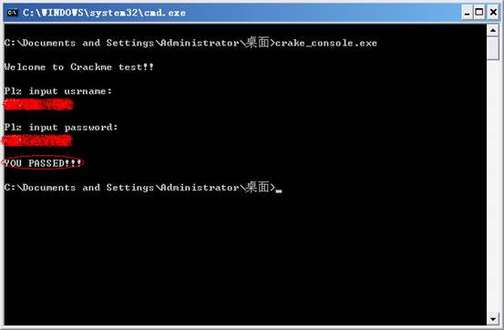
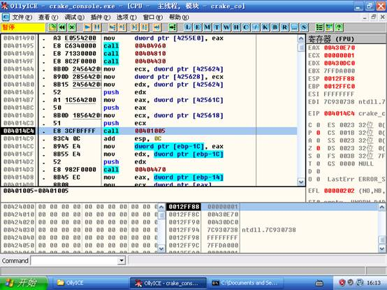
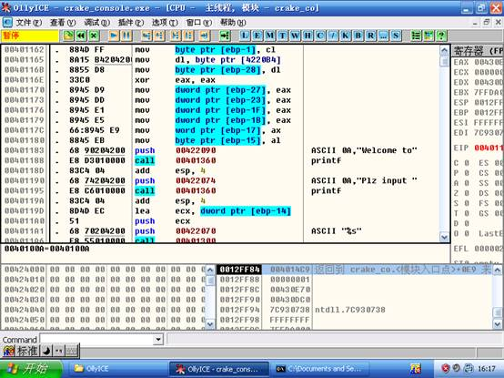
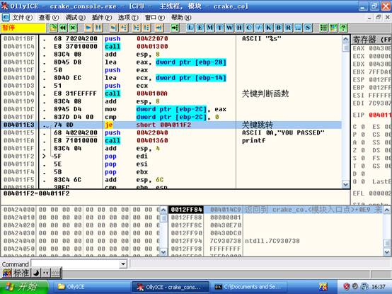
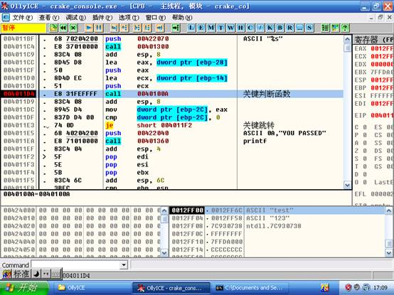
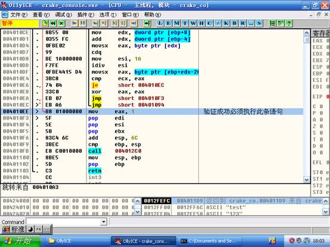
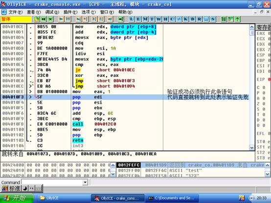
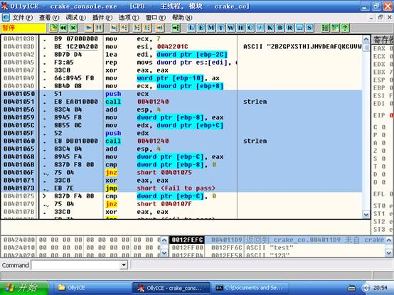

逆向工程技术高级实验
实验目的
1、 复习汇编指令集，掌握基本汇编指令。
2、 学习PE格式，对PE格式有大致的了解。
3、 阅读逆向工程技术基础文档，掌握逆向工程技术相关原理。
4、 结合调试工具对简单程序完成深入逆向。具备初级逆向技术能力。
实验要求
1、 仔细阅读逆向工程基础文档，了解函数、变量、循环等在逆向工程中的表现形式。
2、 仔细认真观看逆向工程相关实验视频，并完成实践。
3、 根据实验内容，回答实验问题。完成拓展训练，写出实验报告。
实验步骤
1、逆向程序找出程序注册码
反汇编逆向学习是极其枯燥的，从具备初级能力到高级水平需要经过长期的训练，所以需要采用比较好的练习方式，一种比较让人有兴趣的反汇编技术练习就是CrackMe训练。CrackMe是一种公开的让人尝试破解的小程序。程序员可制作CrackMe想测试自己的软件保护技术。逆向爱好者也可以通过分析CrackMe增强自己的实力。本次试验通过对一个程序的逆向，弄清程序的实现细节，找出程序的KEY，下面是基本的示范：
（1）程序要求输入用户名跟密码，如果输入的信息正确，程序就会给出正确提示信息。
（2）如果程序输入的用户名和密码不符合程序要求，就会直接退出。

图3-1 程序输入正确的情况
用OD打开目标程序，简单查看入口，可以知道是VC编写的console控制台程序。我们可以很容易的找到入口程序入口0x

图3-2 入口截图
（3）F7进入后，经过多次的单步跟踪后，来到地址0x401162，这里我们可以看到多个字符串提示信息，对比图3-1，可以大致判定此图3-3中的代码是显示提示信息和提取输入信息。

图3-3 main函数代码片段
（4）观察地址0x00401188，并根据执行时的实时结果显示，判定此处CALL 0x00401360为调用printf函数。0x00401360的地址为printf的地址。并且可以看到多处调用printf的代码位置，比如0x00401195。
（5）继续向下翻看代码，看到了熟悉的一句话。“YOU PASSED”，并且就在YOU PASSED的代码的下一句指令是CALL 0x00401360，可以知道这其实是在显示“YOU PASSED”的成功信息。
接着往上看，我们发现了一个je跳转语句，鼠标点击，OD提示跳转刚好跳过“YOU PASSED”成功信息的显示的相关语句。我们由此推断此跳转是关键跳转，如果代码运行到此处跳转了，说明程序验证没有成功。如图3-4所示。
（6）查看je跳转代码的上一句是cmp指令，根据以上步骤推断，此[ebp
（7）在地址0x004011D4 CALL 0x

图3-4 关键跳转与关键函数

图3-5关键函数与传入参数
（8）如图3-5所示，程序刚好停在主函数调用关键函数的位置，查看右下角的堆栈的位置，我们发现是字符串test,123这些正是我们随便输入的用户名和密码。那么很可能就是对用户名做很多的运算，并且进行验证。所以更加肯定了我们之前的判断。
（9）F7进入判断函数。可以查看到判断函数内部比较复杂，有很多的跳转，和判断语句。为了理清思路，我们知道主函数是根据判断函数的返回值来确定是否验证成功的，那么从返回值的eax的值的考察作为突破口。查看判断函数的最后几行代码。如图3-6所示。

图3-6 验证函数返回部分
（10）我们可以发现有一行mov eax, 1，在这一行的最左边地址的旁边，我们看到OD显示了一个“>”符号表示此行会有代码跳转到此处。通过再次试验，验证函数需要返回1，程序才能执行成功。如何验证函数才能返回1，就必须执行地址0x004010EE的指令。
（11）如果直接程序直接跳转到0x

图3-7验证函数返回部分
（12）在地址0x004010EE，0x
（13）0x00401073:此处是jmp过去的。所以之前的jnz一定要跳转成功。经过动态调试可以发现CALL 0x00401240其实是求字符串的长度。所以稍作分析，表示用户名长度如果为0就失败。
（14）0x0040107D:同样分析，其实就是判断密码长度如果为0就失败。

（15）0x00401089:由jmp指令跳到失败，于是之上的je必须跳转成功，仔细分析，可以知道用户名和密码长度不相等就失败。

到此处，详细分析暂时停止。后续的分析由同学自行完成。
作业练习
用OD继续分析实验中的程序。回答以下几个问题：
1. 程序需要验证哪几大方面的东西。
2. 分析剩下程序完成验证原理的详细阐述
3. 写一个简单的keygen程序，要求实现用户输入一个用户名，自动算出密码。语言不限。
实验总结
逆向工程也让我们能够有更多的机会窥视到系统的底层，让我们对程序设计的理解更上一层楼、本次试验采用CrackMe的形式，免去枯燥，新颖且有趣，希望同学坚持学习，更上一层楼。